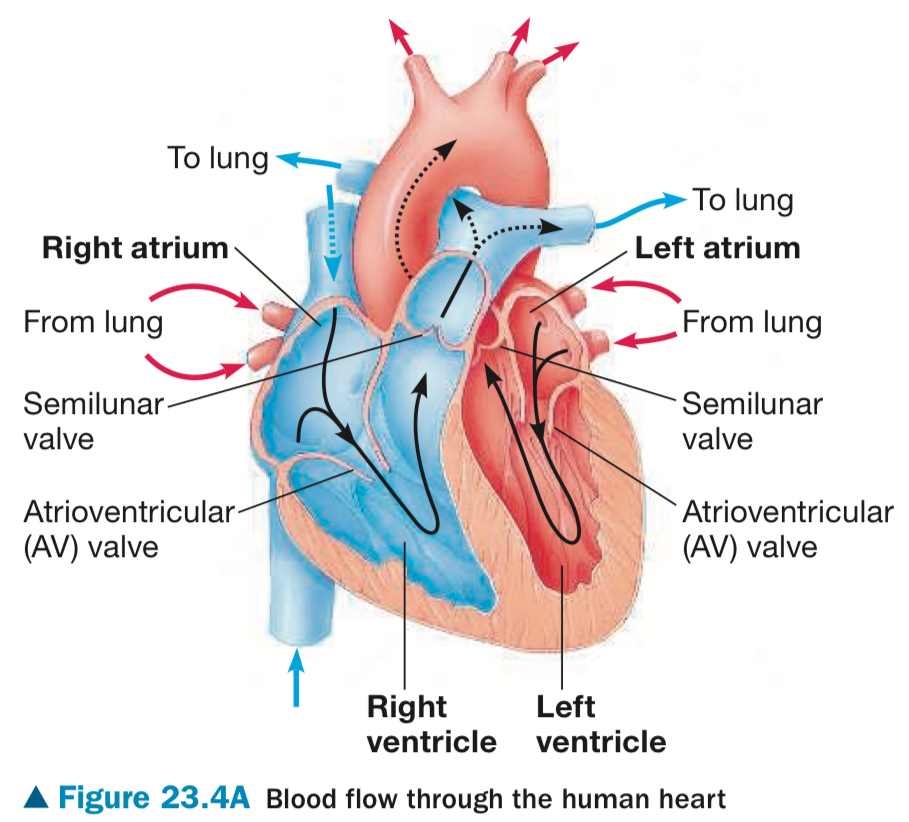
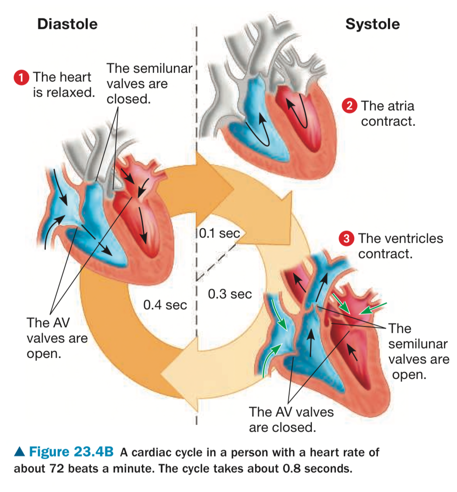

To sustain life, an animal must acquire nutrients, exchange gases, and dispose of waste products, and these needs ultimately extend to every cell in the body. These functions are facilitated by a circulatory system.

Details
This image shows the path blood takes as the heart separately but simultaneously pumps oxygen-poor blood to the lungs and oxygen-rich blood to the body. Notice that the ventricles, which pump blood to the lungs and body, have much thicker walls than the atria. The thin walled atria collect blood returning to the heart and squeeze it into the ventricles below, an action that does not require much force. Flap-like valves made of connective tissue are positioned in the exit from each chamber. The valves between the atria and ventricles are called atrioventricular(AV) valves; at the exit from each ventricle is a semilunar valve. These valves open when pushed from one side and close when pushed from the other, thus preventing backflow.

Details
The heart contracts and relaxes in a rhythmic sequence known as the cardiac cycle. When the heart contracts, it pumps blood; when it relaxes, blood fills its chambers. The image shows this cycle. In the phase called diastole, the heart is relaxed and blood flows into all four of its chambers. Blood enters the right atrium from the venae cavae and the left atrium from the pulmonary veins. The AV valves are open and the semilunar valves are closed. The ventricles nearly fill with blood during diastole. The contraction phase of the cardiac cycle is called systole. Systole begins with a very brief contractions of the atria that completely fills the ventricles with blood(atrial systole). Then the ventricles contract (ventricular systole). The force of their contraction closes the AV valves, opens the semilunar valves, and pumps blood into the large arteries. Blood flows into the relaxed during the second part of systole, as the green arrows in step 3 indicate.
The heart has four chamber: two atria and two venticles. The right side of the heart handles only oxygen-poor blood; the left side receives and pumps only oxygen-rich blood. A powerful four-chambered heart is an evolutionary adaptation that supports the high metabolic rates of mammals, which are endothermic.